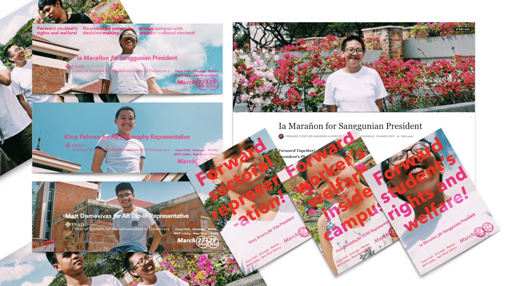
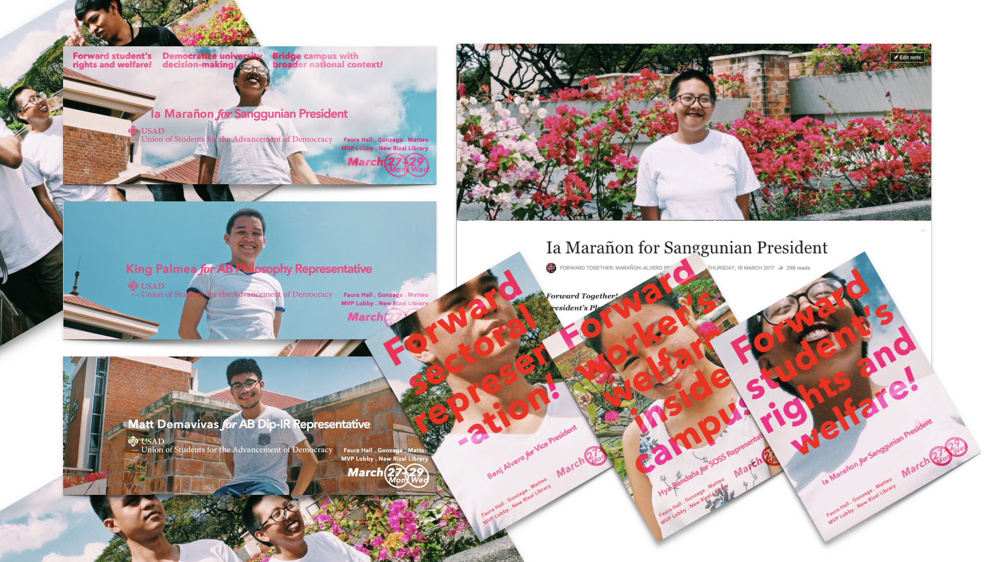

1 Successfully launched the party’s previous campaigns during the last two student government general elections and assisted in the post-production and design of print and online paraphernalia during the campaign period.
Union of Students for the Advancement of Democracy
- 1. Plant Parenthood and
other personal projects
Children's Illustrations
- 2. Union of Students for the
Advancement of Democracy
Agitation and Propaganda
- 3. Ateneo Association of
European Studies Students
Layout and Editorial Work
- 4. Bangsa: Nation Builder's Kit
Game Art and Development
- Complete Rèsumè
- twitter.com/theosanti
- linkedin.com/in/theosanti
- be.net/theosanti1994
Website last modified May 21, 2017.
 
